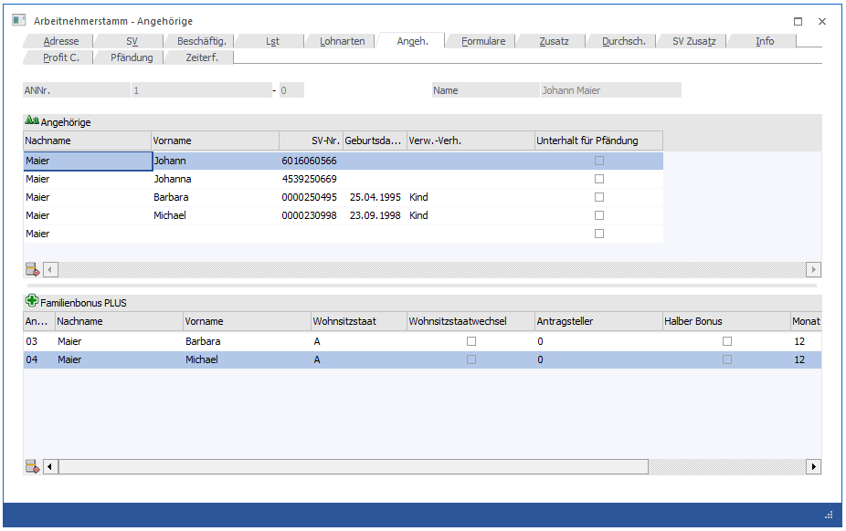

In diesem Fenster, das über den Menüpunkt
1 Stammdaten
1 Arbeitnehmer
1 Arbeitnehmerstamm
oder Schnellaufruf
1 STRG + A
1 Register Arbeitnehmerstamm - Angehörige
aufgerufen wird, können die Angehörigen des AN verwaltet werden. Dies ist vor allem dann erforderlich, wenn ein Familienbonus PLUS in Anspruch genommen wird, oder wenn eine Pfändung über das Pfändungsmodul erfolgt.

Eingabefelder
Ø Nachname
Der Nachname wird aus dem AN-Stamm vorgeschlagen und kann ggf. auch geändert werden.
Ø Vorname
Eingabe des Vornamens des Angehörigen.
Ø SV-Nr.
Hier muss die SV-Nummer des Angehörigen/Mitversicherten eingetragen werden.
Ø Geburtsdatum
Für die Ermittlung des korrekten Familienbonus Plus Betrag ist es erforderlich das Geburtsdatum des jeweiligen Angehörigen zu hinterlegen.
Ø Verw.-Ger.
In diesem Feld wird das Verwandtschaftsverhältnis vom AN zum Angehörigen /Mitversicherten eingetragen.
Ø Unterhalt
Diese Checkbox betrifft die Pfändung. Ist diese Checkbox aktiviert, so wird bei Ausgabe einer Drittschuldnererklärung dieser Unterhaltspflichtige am Formular auch angedruckt
Ø 
Durch Anklicken des Entfernen-Buttons können Angehörige gelöscht werden, allerdings nur dann, wenn für den Angehörigen noch keine Krankenscheine ausgegeben wurden (wenn das der Fall ist, wird eine entsprechende Meldung ausgegeben). Der AN selbst kann nicht gelöscht werden - es wird ein entsprechender Hinweis angezeigt.
Es können beliebig viele (sofern vorhanden) Angehörige erfasst werden.
Tabelle Familienbonus Plus
Ø Angehöriger
Hier kann aus einer Auswahllistbox jener Angehöriger ausgewählt werden, für den ein Familienbonus Plus berücksichtigt werden soll. Zur Auswahl stehen all jene Angehörigen die zuvor in der Tabelle Angehörige vollständig angelegt wurden.
Ø Nachname
Ø Vorname
Nachname und Vorname werden aus der Tabelle Angehörige übernommen.
Ø Wohnsitzstaat
Hier muss der Wohnsitzstaat des Angehörigen hinterlegt werden. Dies wird zum einen für den Andruck am L16 benötigt. Es sind all jene Wohnsitzstaaten auswählbar, die für den Bezug von Familienbonus Plus zulässig sind.
Ø Wohnsitzstaatwechsel
Erfolgt im laufenden Jahr ein Wohnsitzstaatwechsel von jenem Angehörigen, für den Familienbonus Plus bezogen wird, so muss diese Checkbox aktiviert werden, damit dies korrekt am L16 ausgewiesen werden kann.
Ø Antragssteller
Hier kann aus einer Auswahllistbox ausgewählt werden, in welcher "Beziehung" der Familienbonus Plus-Bezieher zum Angehörigen steht. Zur Auswahl stehen:
ü 0 Familienbeihilfenbezieher
ü 1 Partner Familienbeihilfenbezieher
ü 2 Unterhaltszahler
Ø Halber Bonus
Soll laut Antragsformular der halbe Familienbonus Plus berücksichtigt werden, muss diese Checkbox aktiviert werden.
Ø Monat von
Hier ist jener Monat anzugeben, ab wann der Familienbonus Plus berücksichtigt werden soll.
Ø Jahr von
Hier ist jenes Jahr anzugeben, ab wann der Familienbonus Plus berücksichtigt werden soll.
Ø Monat bis
Hier ist jener Monat anzugeben, bis wann der Familienbonus Plus berücksichtigt werden soll.
Ø Jahr bis
Hier ist jenes Jahr anzugeben, bis wann der Familienbonus Plus berücksichtigt werden soll.